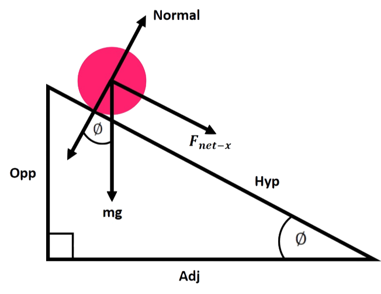
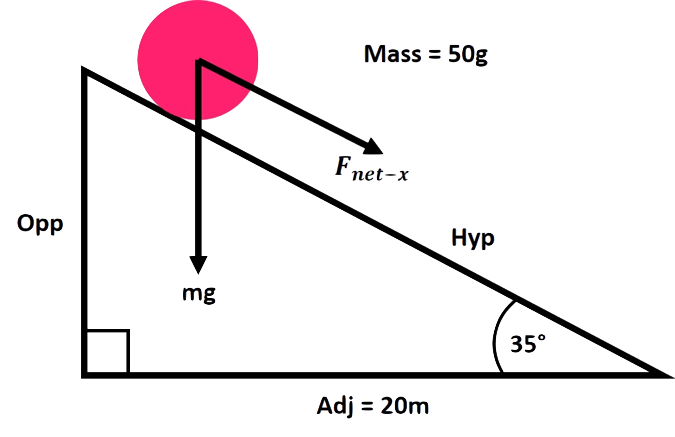

REVISION
THEORY
 When a ball rolls down a slope there are forces that act on that ball, these are combined to create the resultant force which is what makes the ball move. These forces include the gravitational force being the weight of the ball which is mass*gravity, this force pushes the ball vertically downwards. Another force is the normal acting perpendicular to the angle of the slope, this force can be explained by Newton’s Third Law in which every action (force, the ball on the slope) has an equal and opposite reaction (the normal force). To work out the downhill net force of the ball in the x-direction the formula is as shown:
F(net-x) = mgsin(∅) = max
In which m is the mass and a is the acceleration of the object. The formula for working out the acceleration is ax = gsin(∅), this equation can be used to find out the time it took for the ball to go down the slope and the final velocity of the ball. With our simulation the input values are the angle of the slope and the mass of the ball so with these values the net force and acceleration can easily be calculated by inputting the values into the equations above. The length of the adjacent side to the angle will be known as it will never change.
To work out the time and velocity the SUVAT equations will need to be used. For velocity the following equation can be used v2 = u2 + 2as however you will need to square root the answer to get the right value of the final velocity. Looking at this equation we have a, which is the acceleration and the initial velocity (u) equals 0 so to work out t(time) we first need to find s(displacement). This equation can be shortened down to v2 = 2as because u2 = 0. To work out the displacement you simply use trigonometry, the known side is adjacent and the wanted side is the opposite therefore using SOH CAH TOA we know that we will be using tan(). Thus, the equation we will be using to work out the displacement will be s = tan(∅)×adj. Now the final velocity can be worked out using all the equations above.
Finally, to work out the time that it takes the ball to roll down the slope we can use any of the following SUVAT equation:
a=(v-u)/t
v=u+at
s=1⁄2(u+v)t
These equations will need to be rearranged so that t is the subject and nothing else need to be worked out as we already have all the values needed in these equations. Just insert the values and that is how you work out the time.
PRACTICE QUESTION

Q: Find the net Force to 2 decimal places.
F(net-x) = mgsin(∅) = max
Mass = 50, Theta = 35, Gravity = 9.8
35 × 9.8 × sin(35) = 343 × sin(35) = 196.736
Rounded to 2 decimal places the answer is 196.74N
Q: Find the final velocity.
v2=u2+2as
u=0
ax = gsin(∅) -> a = 9.8sin(35) = 5.62ms-2
s = tan(∅) × adj -> s = tan(35) × 20 = 14m
v2 = 2 × 5.62 × 14 = 157.36
√157.36 = 12.54
v = 12.54ms-1
Q: Find t.
a = (v-u)/t
Rearrange to solve for t.
t = (v-u)/a
a = 5.62ms2, u = 0, v = 12.54
t = 12.54⁄5.62 = 2.23s